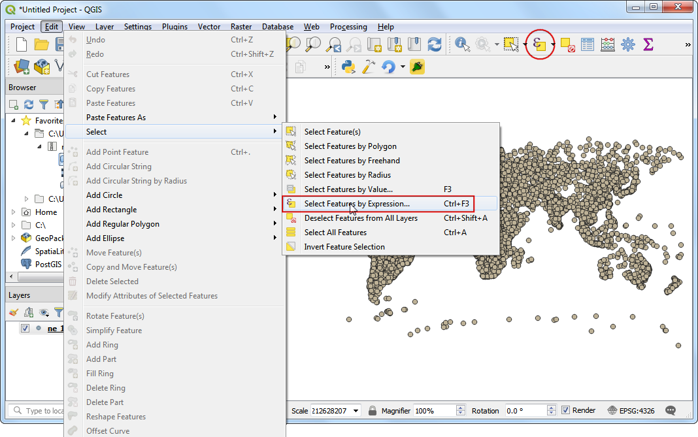
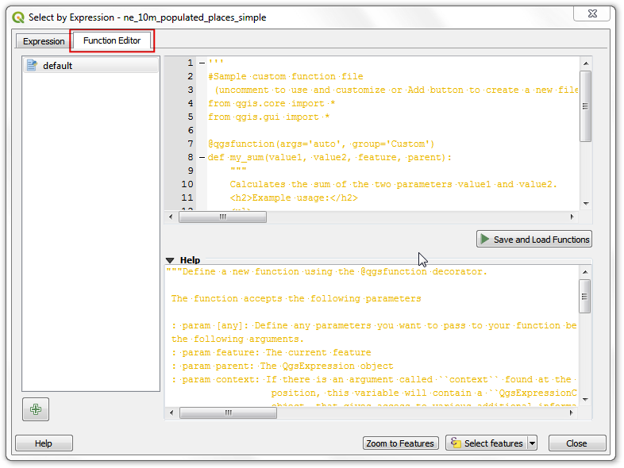
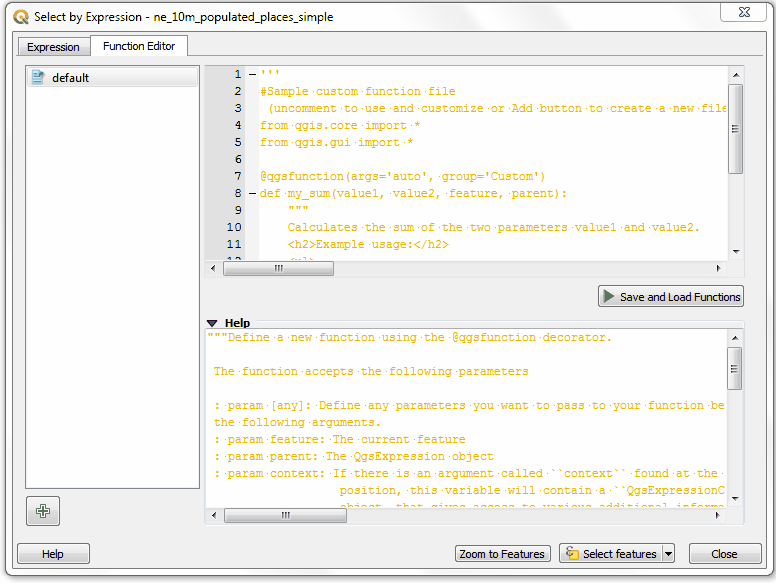
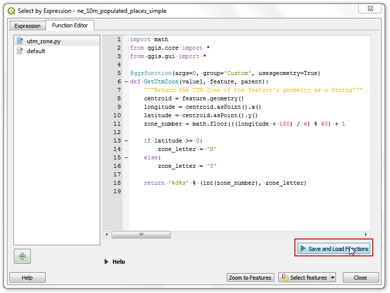
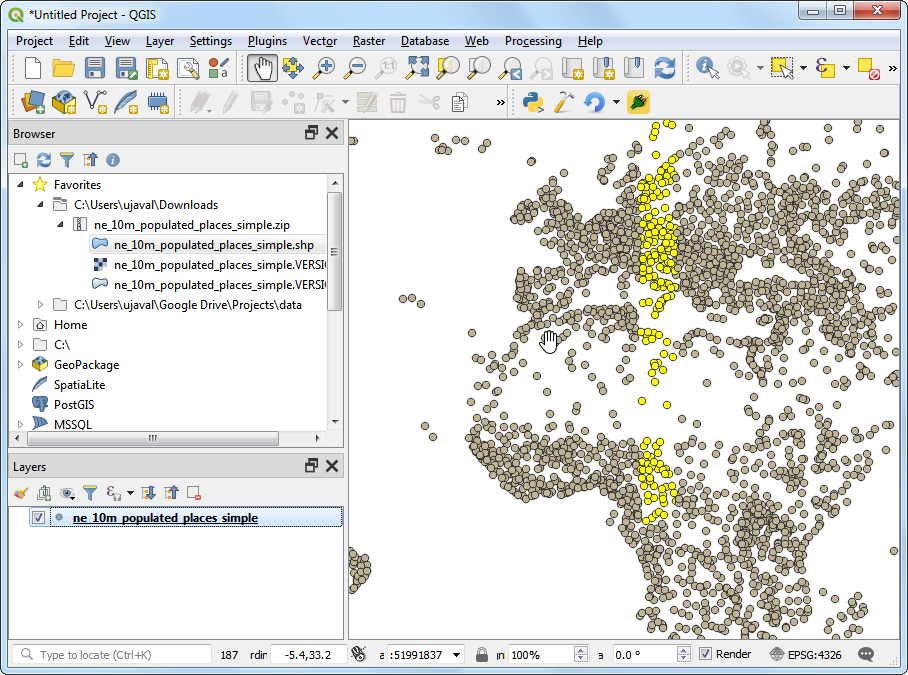
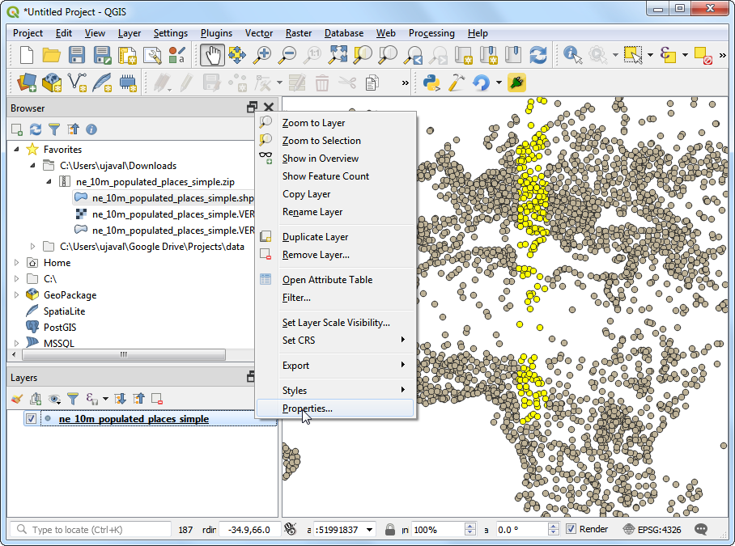
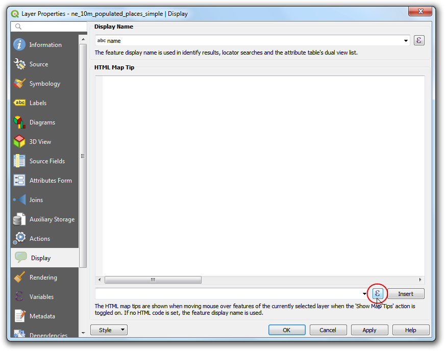
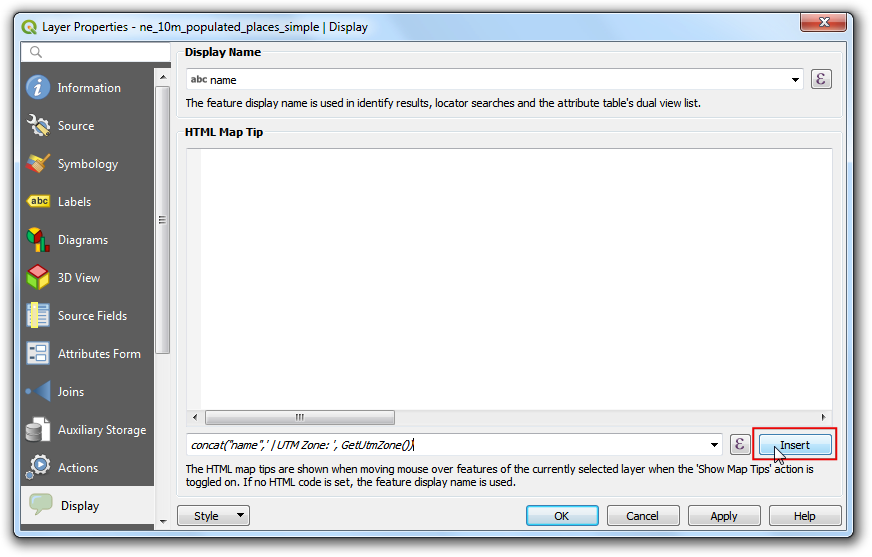
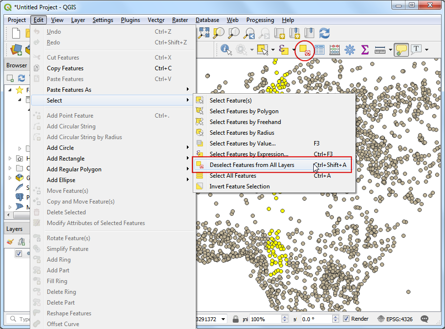
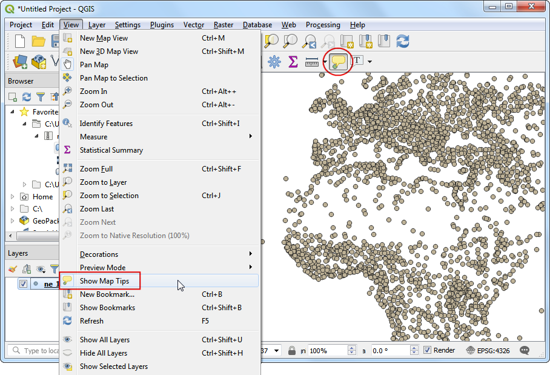

Ujaval Gandhi
Ujaval GandhiKorišćenje prilagođenih Pajton izraznih funkcija (QGIS3)¶
Izrazi u QGIS-u imaju veliku moć i koriste se u mnogim osnovnim funkcijama: selekciji, izračunavanju vrednosti polja, stilizovanju, označavanju itd. QGIS takođe ima podršku za korisnički definisane izraze. Uz malo programiranja u Pajtonu, možete definisati sopstvene funkcije koje se mogu koristiti unutar mehanizma za izraze.
Pregled zadatka¶
Definisaćemo prilagođenu funkciju koja pronalazi UTM broj zone karakteristike mape i koristiti ovu funkciju da napišemo izraz koji prikazuje UTM zonu kao savet mape kada se mišem zadrži iznad tačke.
Druge veštine koje ćete naučiti¶
Kako se koristi alatka „Saveti za mapu“ za prikaz prilagođenog teksta kada se mišem zadrži iznad objekta.
Dobijte podatke¶
Koristićemo skup podataka „Populated Places <http://www.naturalearthdata.com/downloads/10m-cultural-vectors/10m-populated-places/>”__ sajta Natural Earth. Preuzmite jednostavan skup podataka „simple (less columns)” <http://www.naturalearthdata.com/http//www.naturalearthdata.com/download/10m/cultural/ne_10m_populated_places_simple.zip>`__
Procedura¶
Pronađite datoteku
ne_10m_populated_places_simple.zipu QGIS pregledaču i proširite je. Izaberite datotekune_10m_populated_places_simple.shpi prevucite je na platno.

Idite na ili kliknite na dugme Izaberi karakteristike pomoću izraza na Traci sa alatkama za atribute.

U dijalogu Izaberi po izrazu, pređite na karticu Uređivač funkcija. Ovde možete napisati bilo koji PyQGIS kod koji će izvršiti mehanizam za izraze.

Definisaćemo prilagođjenu funkciju pod nazivom „GetUtmZone“ koja će izračunati broj UTM zone za svaki objekat. Pošto prilagođjene funkcije u QGIS-u rade na nivou objekata, koristićemo centroid geometrije objekata i izračunaćemo UTM zonu iz geografske širine i dužine geometrije centroida. Takođe ćemo dodati oznaku „N“ ili „S“ zoni da bismo naznačili da li se zona nalazi na severnoj ili južnoj hemisferi. Pritisnite dugme + u donjem levom uglu ekrana i otkucajte
utm_zones.pykao ime datoteke. Možete kliknuti na oznaku Help u donjem panelu da biste ga zatvorili i proširili panel sa kodom.

UTM zone su uzdužne projekcione zone numerisane od 1 do 60. Svaka UTM zona je široka 6 stepeni. Ovde koristimo jednostavnu matematičku formulu da bismo pronašli odgovarajuću zonu za datu vrednost geografske dužine. Ova formula funkcioniše za sve osim nekoliko posebnih UTM zona. Unesite sledeći kod u prozor za uređivanje. Kada završite, kliknite na Sačuvaj i učitaj funkcije.
import math from qgis.core import * from qgis.gui import * @qgsfunction(args=0, group='Custom', usesgeometry=True) def GetUtmZone(value1, feature, parent): """Return the UTM Zone of the feature's geometry as a string""" centroid = feature.geometry().centroid() if centroid: longitude = centroid.asPoint().x() latitude = centroid.asPoint().y() zone_number = math.floor(((longitude + 180) / 6) % 60) + 1 if latitude >= 0: zone_letter = 'N' else: zone_letter = 'S' return '%d%s' % (int(zone_number), zone_letter) else: return None
Белешка
Trenutno ne postoji način da se obriše datoteka izraza iz grafičkog korisničkog interfejsa. Ako želite da obrišete datoteku utm_zone.py, možete otići na i obrisati datoteku iz .
Pređite na karticu Izraz u dijalogu Izaberi po izrazu. Pronađite i proširite grupu Prilagođeno u odeljku Funkcije. Primetićete novu prilagođenu funkciju
GetUtmZonena listi. Sada možemo da koristimo ovu funkciju u izrazima baš kao i bilo koju drugu funkciju. Unesite sledeći izraz u uređivač. Ovaj izraz će izabrati sve tačke koje spadaju u UTM zonu33N. Kliknite na Zumiraj na karakteristike i mapa će se promeniti, ako kliknete na Izaberi karakteristike trebalo bi da vidite da tačke u UTM zoni 33N menjaju boju u žutu.GetUtmZone() = '33N'

Белешка
Zbog greške, ova funkcija nije radila u ranijim verzijama QGIS 3. Ispravljena je od verzije 3.4.5 pa nadalje.
Nazad u glavnom QGIS prozoru, trebalo bi da vidite neke tačke označene žutom bojom. To su tačke koje spadaju u UTM zonu koju smo naveli u izrazu.
Videli ste kako smo definisali i koristili prilagođenu funkciju za odabir obeležja pomoću izraza. Sada ćemo istu funkciju koristiti u drugom kontekstu. Jedan od skrivenih dragulja u QGIS-u je alat Savet mape. Ovaj alat prikazuje korisnički definisan tekst kada pređete mišem preko obeležja. Kliknite desnim tasterom miša na sloj
ne_10m_populated_places_simplei izaberite Svojstva.Pređite na karticu Prikaz. Ovde možete uneti bilo koji tekst koji će se prikazivati kada zadržite pokazivač miša iznad elemenata sloja. Još bolje, možete koristiti vrednosti polja sloja i izraze da biste definisali mnogo korisniju poruku. Kliknite na dugme Ɛ.
Ponovo ćete videti poznati uređivač izraza. Koristićemo funkciju „concat“ da spojimo vrednost polja „name“ i rezultat naše prilagođene funkcije „GetUtmZone“. Unesite sledeći izraz i kliknite na :guilabel:„OK“.
concat("name",' | UTM Zone: ', GetUtmZone())

Videćete uneti izraz kao vrednost teksta za prikaz. Kliknite na Ubaci da biste ga dodali u HTML polje, a zatim pritisnite U redu.
Pre nego što nastavimo, hajde da opozovemo izbor objekata koji su izabrani u prethodnom koraku. Idite na ili kliknite na dugme Opozovi izbor objekata iz svih slojeva na Traci sa alatkama za atribute.
Aktivirajte alatku „Saveti za mapu“ tako što ćete otići na ili kliknuti na dugme Prikaži savete za mapu na Traci sa alatkama za atribute.
Uvećajte bilo koju oblast mape i postavite kursor miša iznad bilo kojeg objekta. Videćete ime grada i odgovarajuću UTM zonu prikazanu kao vrh mape.

If you want to give feedback or share your experience with this tutorial, please comment below. (requires GitHub account)